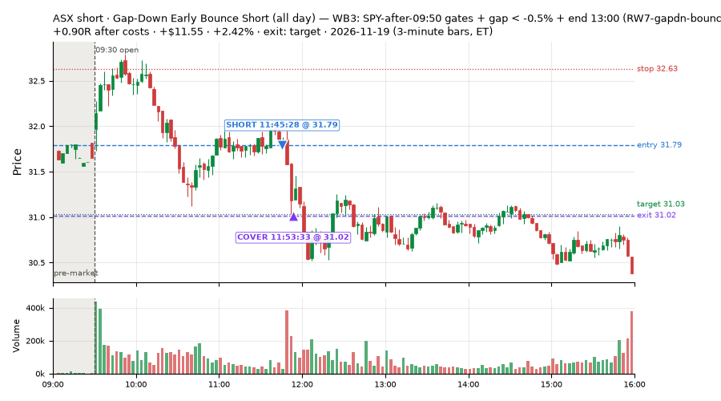
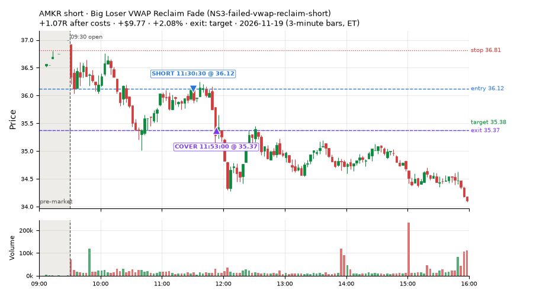
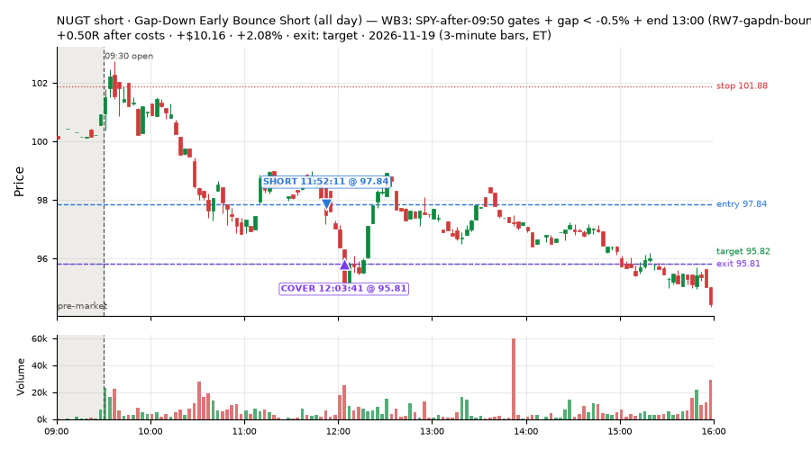
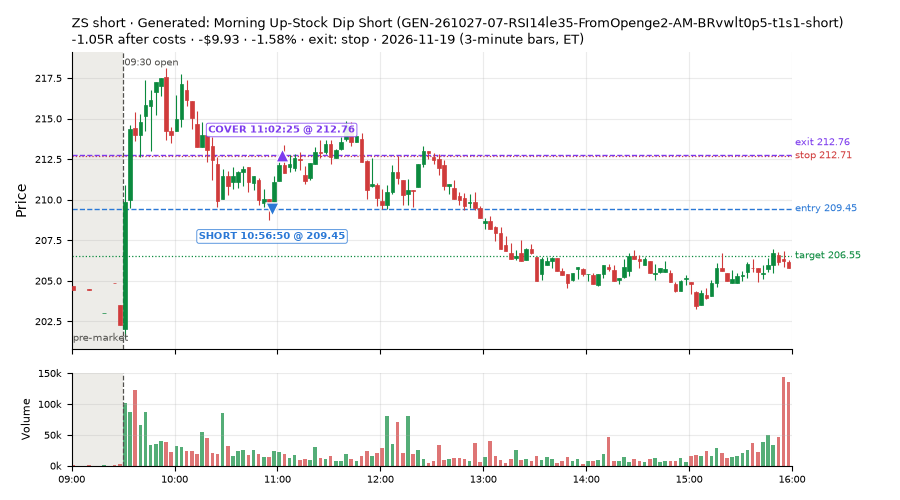
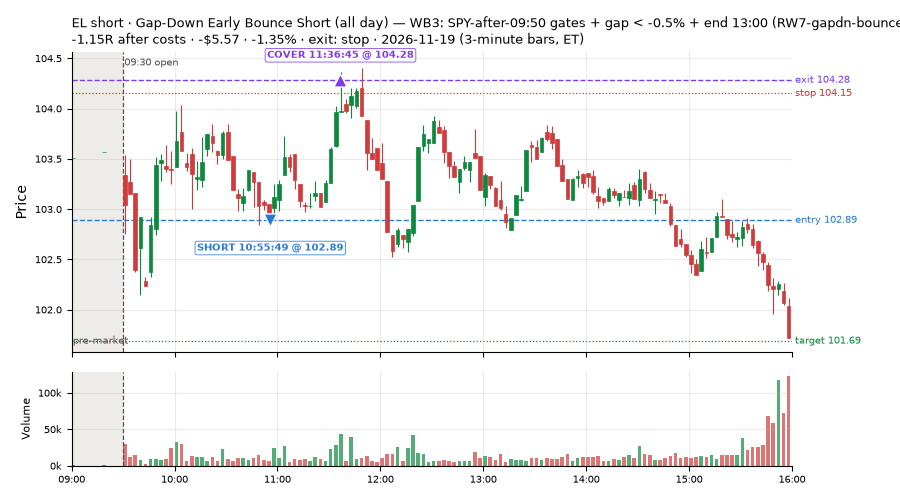
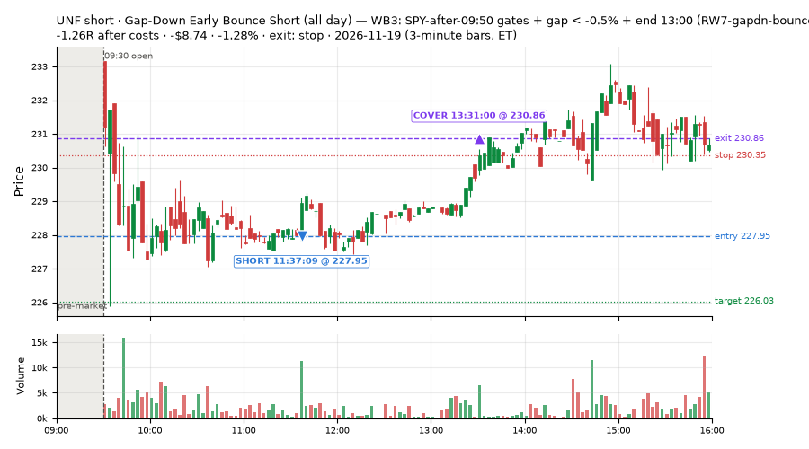
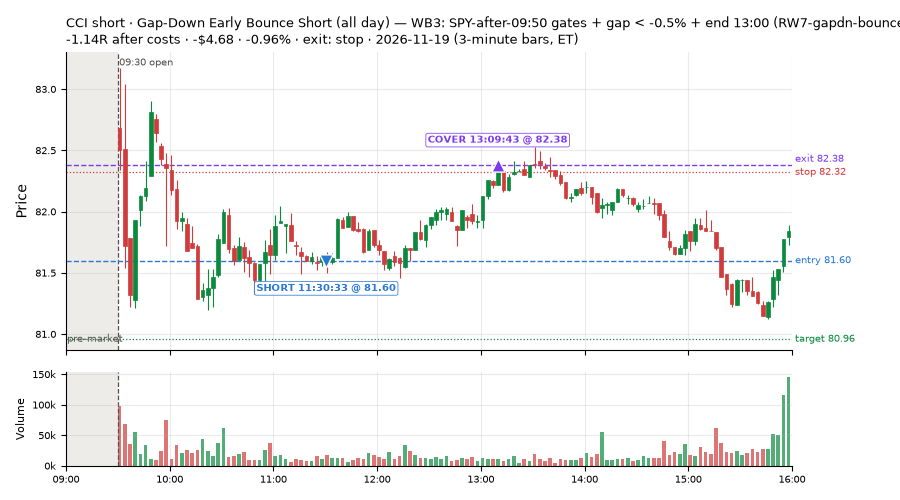
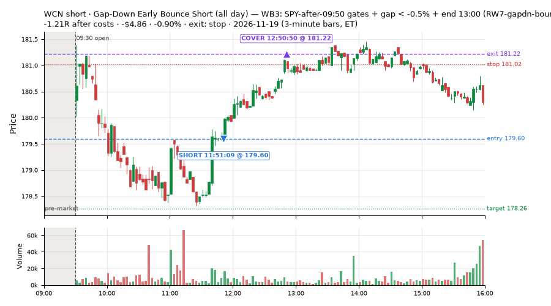

30 trades · win rate 50% · P/L $37.06
PROBATION: no live setup has passed both locked test periods. 10 owner-directed setups added 2026-10-08 (MarcoFlow top 5 + 5 new), untested live. RW6G1 (RW6 + VWAP band guard) added 2026-10-09, probation.

| Symbol | Setup | Side | In | Out | Entry | Exit | Exit reason | % gained | P/L |
|---|---|---|---|---|---|---|---|---|---|
| ASX | Gap-Down Early Bounce Short (all day) — WB3: SPY-after-09:50 gates + gap < -0.5% + end 13:00 (RW7-gapdn-bounce-early-short-FD-WB3) | short | 11:45 | 11:53 | 31.79 | 31.02 | target | +2.42% | $11.55 |
| AMKR | Big Loser VWAP Reclaim Fade (NS3-failed-vwap-reclaim-short) | short | 11:30 | 11:53 | 36.12 | 35.37 | target | +2.08% | $9.77 |
| NUGT | Gap-Down Early Bounce Short (all day) — WB3: SPY-after-09:50 gates + gap < -0.5% + end 13:00 (RW7-gapdn-bounce-early-short-FD-WB3) | short | 11:52 | 12:03 | 97.84 | 95.81 | target | +2.08% | $10.16 |
| Symbol | Setup | Side | In | Out | Entry | Exit | Exit reason | % lost | P/L |
|---|---|---|---|---|---|---|---|---|---|
| ZS | GEN-261027-07-RSI14le35-FromOpenge2-AM-BRvwlt0p5-t1s1-short | short | 10:56 | 11:02 | 209.45 | 212.76 | stop | -1.58% | $-9.93 |
| EL | RW7-gapdn-bounce-early-short-FD-WB3 | short | 10:55 | 11:36 | 102.89 | 104.28 | stop | -1.35% | $-5.57 |
| UNF | RW7-gapdn-bounce-early-short-FD-WB3 | short | 11:37 | 13:31 | 227.95 | 230.86 | stop | -1.28% | $-8.74 |
| CCI | RW7-gapdn-bounce-early-short-FD-WB3 | short | 11:30 | 13:09 | 81.60 | 82.38 | stop | -0.96% | $-4.68 |
| WCN | RW7-gapdn-bounce-early-short-FD-WB3 | short | 11:51 | 12:50 | 179.60 | 181.22 | stop | -0.90% | $-4.86 |








Signal to fill: median 2s, 90th percentile 4s (30 trades). Bars close each minute; the order follows the bar close.
Best excursion (MFE): median 0.49R; worst (MAE) median 0.52R. 43% of trades never got +0.25R in our favour; 0 reached +1R and still closed at or below 0.
| Symbol | Setup | Best R | Worst R | Closed R |
|---|---|---|---|---|
| PSA | RW7-gapdn-bounce-early-short-FD-WB3 | +0.23 | -1.02 | -1.27 |
| UNF | RW7-gapdn-bounce-early-short-FD-WB3 | +0.22 | -1.09 | -1.26 |
| AMT | RW7-gapdn-bounce-early-short-FD-WB3 | +0.20 | -1.10 | -1.16 |
| CCI | RW7-gapdn-bounce-early-short-FD-WB3 | +0.20 | -1.03 | -1.14 |
| SO | RW7-gapdn-bounce-early-short-FD-WB3 | +0.18 | -1.01 | -1.12 |
| Entry time | Trades | Win | Avg R | P/L |
|---|---|---|---|---|
| 10:30-11:30 | 6 | 33% | -0.41 | $-13.53 |
| 11:30-13:00 | 21 | 62% | +0.14 | $60.89 |
| 14:00-16:00 | 3 | 0% | -0.23 | $-10.30 |
| Setup | Trades | Win | Avg R after costs | Adj R (net of SPY) | Avg R ex-market (all sessions) | P/L |
|---|---|---|---|---|---|---|
| Generated: Morning Up-Stock Dip Short (GEN-261027-07-RSI14le35-FromOpenge2-AM-BRvwlt0p5-t1s1-short) | 1.0 | 0% | -1.05 | -0.96 | -0.41 (beta -1.41, n 32) | $-9.93 |
| Late-Day ETF Dip Buy — WB4: more dips (refire, looser DI, falling-hour guard) (NM-ETF-late-dip-di-long-WB4) | 3.0 | 0% | -0.23 | -0.18 | +0.03 (beta +1.08, n 6) | $-10.30 |
| Big Loser VWAP Reclaim Fade (NS3-failed-vwap-reclaim-short) owner-directed; holdouts once: Sep-Oct +0.119R n65, Apr-Jun -0.136R n524 | 3.0 | 100% | +0.76 | +0.31 | -0.03 (beta -0.74, n 20) | $25.34 |
| Gap-Down Early Bounce Short (all day) — WB3: SPY-after-09:50 gates + gap < -0.5% + end 13:00 (RW7-gapdn-bounce-early-short-FD-WB3) | 23.0 | 52% | -0.03 | -0.87 | -0.15 (beta -0.54, n 85) | $31.95 |
Market direction (SPY, beta 1) accounted for $112.23 of today's $37.06; the rest ($-75.17) came from the setups themselves. Avg R net of SPY: -0.68 (incl. a hedge leg's cost; report only).
14 setups live today. Today: 48 signals, 30 taken, 0 lost because another setup held the symbol (0%). Since 2026-11-12 (6 sessions): 642 signals, 296 taken, 3 lost to other setups (0%). Peak open positions today 16 of 400 slots. Earnings blackout removed 209 symbols before scanning.
Simulated playing time (not live): 346 what-if trades of signals not taken, avg -0.09R, 47% winners; of them 3 lost to another setup (avg +0.33R).
Silent: NM-RWN5-ns3-mon-weakrs-short-WB3, CWT04-backside-lh-a25-short, IDX5-spy050-0945-3x-trail, GEN-261022-08-EMAdChglem0p094-Flow3ge1-RVolDayle0p59-AM-SPYgt0p25-holdtr-short, LIQ-pdl-sweep-open15-vwap-long
| Prio | Setup | Today sig / taken | Sessions | Signals / taken / trades | Taken/day | Expected/day | Lost to other setups | Lost to (setup n) | Top skip reasons | SIMULATED: not-taken n / avg R / win | Verdict |
|---|---|---|---|---|---|---|---|---|---|---|---|
| 1 | Late-Day ETF Dip Buy — WB4: more dips (refire, looser DI, falling-hour guard) NM-ETF-late-dip-di-long-WB4 | 3 / 3 | 3 | 9 / 6 / 6 | 2.00 | – | 1 | NS3-failed-vwap-reclaim-short 1 | other 2, symbol held by another setup 1 | 3 / +0.26R / 100% | slow 10.0 entries/week; ~6 weeks to 60 trades |
| 2 | Gap-Down Early Bounce Short (all day) — WB3: SPY-after-09:50 gates + gap < -0.5% + end 13:00 RW7-gapdn-bounce-early-short-FD-WB3 | 29 / 23 | 3 | 114 / 85 / 85 | 28.33 | – | 1 | GEN-261028-09-FlowShiftlem0p65-ADX7le23-AM-BRoplt0p35-t05s1-long 1 | spread / quote / size 24, not shortable / shorts off 4, symbol held by another setup 1 | 29 / -0.32R / 34% | ok 141.7 entries/week |
| 3 | Monday Weak-RS NS3 Short (near-miss) — WB3: reclaim volume >= 0.45x, from 10:05 NM-RWN5-ns3-mon-weakrs-short-WB3 | 0 / 0 | 3 | 0 / 0 / 0 | 0.00 | – | 0 | – | – | 0 / – | silent no signals in 3 session(s); no expected rate on file |
| 4 | Generated: Lunch New-Low Short (selling) — WB1: down >= 1.3 ATR on the day GEN-261026-03-NewLOD-Flow3lem0p37-FromOpenATRlem0p78-LUNCH-BRopgt0p5-holdtr-short-WB1 | 0 / 0 | 3 | 2 / 2 / 2 | 0.67 | – | 0 | – | – | 0 / – | slow 3.3 entries/week; ~18 weeks to 60 trades |
| 5 | Backside Lower-High Short (big runner) CWT04-backside-lh-a25-short | 0 / 0 | 6 | 0 / 0 / 0 | 0.00 | – | 0 | – | – | 0 / – | silent no signals in 6 session(s); no expected rate on file |
| 6 | Index Dip Bounce 5 3x S&P IDX5-spy050-0945-3x-trail | 0 / 0 | 6 | 0 / 0 / 0 | 0.00 | – | 0 | – | – | 0 / – | silent no signals in 6 session(s); no expected rate on file |
| 7 | * SPY Dip of 0.30%, Breadth Turn (SPXL, trailing) (near-miss) LD8-spy-dip030-breadthturn-spxl-holdtr-long | 0 / 0 | 6 | 1 / 1 / 1 | 0.17 | – | 0 | – | – | 0 / – | slow 0.8 entries/week; ~72 weeks to 60 trades |
| 8 | Big Gainer Fade with VWAP Band Guard RW6G1-ns2-up3-vwap2sd-short | 0 / 0 | 6 | 11 / 5 / 5 | 0.83 | 0.40 | 0 | – | not shortable / shorts off 4, spread / quote / size 1, other 1 | 6 / +1.05R / 100% | slow 4.2 entries/week; ~14 weeks to 60 trades |
| 9 | Generated: Morning New-High Short (SPY down) GEN-261019-08-NewHOD-Slope6ge0p03-DayRngVsPrevge1p5-AM-SPYdn-hold-short | 0 / 0 | 4 | 25 / 3 / 3 | 0.75 | – | 0 | – | spread / quote / size 13, other 8, not shortable / shorts off 1 | 22 / +0.45R / 59% | slow 3.8 entries/week; ~16 weeks to 60 trades |
| 10 | Generated: Late Pullback Buy (MACD rising) GEN-261027-01-MACDhge0p12-Ret15mATRlem0p069-LATE-BRvwgt0p5-t05s1-long | 0 / 0 | 6 | 12 / 3 / 3 | 0.50 | – | 0 | – | spread / quote / size 7, other 2 | 9 / -0.25R / 33% | slow 2.5 entries/week; ~24 weeks to 60 trades |
| 11 | Generated: Open Up-Day Bounce Short GEN-261026-05-Ret15mATRge0p042-FromPCATRge0p28-ORHdistlem0p38-OPEN-BRopgt0p5-hold-short | 0 / 0 | 4 | 3 / 1 / 1 | 0.25 | – | 0 | – | not shortable / shorts off 1, spread / quote / size 1 | 2 / +1.08R / 50% | slow 1.2 entries/week; ~48 weeks to 60 trades |
| 12 | Generated: Morning Up-Stock Dip Short GEN-261027-07-RSI14le35-FromOpenge2-AM-BRvwlt0p5-t1s1-short | 10 / 1 | 6 | 129 / 32 / 32 | 5.33 | – | 0 | – | not shortable / shorts off 53, spread / quote / size 32, other 12 | 97 / -0.29R / 37% | ok 26.7 entries/week |
| 13 | Generated: Morning Weak-Bounce Short (quiet) GEN-261022-08-EMAdChglem0p094-Flow3ge1-RVolDayle0p59-AM-SPYgt0p25-holdtr-short | 0 / 0 | 4 | 0 / 0 / 0 | 0.00 | – | 0 | – | – | 0 / – | silent no signals in 4 session(s); no expected rate on file |
| 14 | Big Loser VWAP Reclaim Fade NS3-failed-vwap-reclaim-short | 6 / 3 | 6 | 47 / 20 / 20 | 3.33 | 3.03 | 0 | – | spread / quote / size 19, not shortable / shorts off 6, other 2 | 27 / +0.46R / 74% | ok 16.7 entries/week |
Every trade is attached as a CSV you can open and edit in Excel or Google Sheets. Live page: https://misiti15.github.io/MCF/live/